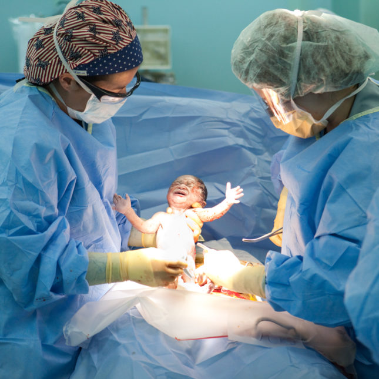

Caesarean Section (ဗိုက်ခွဲမွေးဖွားခြင်း)

အခြေခံအကြောင်းအရာများ
ဗိုက်ခွဲမွေးဖွားခြင်း (C-Section) ဆိုတာဘာလဲ
ဗိုက်ခွဲမွေးဖွားခြင်း (C-Section)ဆိုတာ ဝမ်းဗိုက်ကို ခွဲစိတ်ခြင်းအားဖြင့် ကလေးမွေးဖွားစေတဲ့ ခွဲစိတ်မှု တခုပဲ ဖြစ်ပါတယ်။
များသောအားဖြင့် ပုံမှန်လမ်းကြောင်းကနေ ကလေးမွေးဖွားဖို့ ခက်ခဲတဲ့အခါ ဗိုက်ခွဲမွေးဖွားကြပါတယ်။ ယခင်က ခွဲစိတ်ဖူးရင်လည်း ထပ်မံခွဲစိတ်ရတတ်ပါတယ်။
ပထမဆုံးအကြိမ် ကလေးမွေးတာဆိုရင်တော့ ဗိုက်ခွဲမွေးဖို့ ကိစ္စကို မွေးခန်းထဲမှာ ဆရာဝန်ကပဲ ဆုံးဖြတ်တတ် ကြပါတယ်။
ဗိုက်ခွဲမွေးဖွားခြင်း ဘာကြောင့် လုပ်ဆောင်သလဲ
တခါတရံမှာ ဗိုက်ခွဲမွေးဖွားဟာ ဘေးအကင်းဆုံးနည်း ဖြစ်ပါတယ်။ အောက်ပါ အခြေအနေတွေမှာ ဆရာဝန်ဟာ ဗိုက်ခွဲပြီး မွေးပေးနိုင်ပါတယ်။
ကလေးအနေအထား မမှန်ခြင်း
ကလေး ဖွံ့ဖြိုးမှုသိပ်မရှိခြင်း၊ အားနည်းခြင်း
အချင်းရှေ့ရောက်ခြင်း
ဗိုက်ခွဲမွေးဖူးခြင်း
ကလေးများများမွေးဖူးခြင်း
အခြားပြသနာများရှိပြီး ဗိုက်ခွဲမွေးခြင်းသည် ပိုမိုသင့်တော်ခြင်း
သွေးတိုး၊ ဆီးချို စသည့် ရောဂါတမျိုးမျိုးကြောင့် ရိုးရိုးမွေးဖွားစဉ် ပြသနာရှိနိုင်ခြင်း စတာတွေ ဖြစ်ပါတယ်။
ဖြစ်နိုင်ခြေအန္တရာယ်များ
ဗိုက်ခွဲမွေးဖွားခြင်း ရဲ့ ဖြစ်နိုင်ခြေ အန္တရာယ်တွေက ဘာတွေလဲ
ဗိုက်ခွဲမွေးဖွားခြင်းကို ယနေ့အခါမှာ ကျယ်ကျယ်ပြန့်ပြန့် လုပ်ဆောင်ကြပါတယ်။ ဒီနည်းဟာ ကလေးနဲ့ မိခင်အတွက် ဘေးကင်းစေပါတယ်။ ဒါပေမယ့် တခြား ခွဲစိတ်မှုတွေလိုပဲ နောက်ဆက်တွဲပြသနာတချို့ ရှိပါတယ်။
ဒါ့အပြင် နာလန်ထခြင်းဟာလည်း ရိုးရိုးမွေးဖွားခြင်းထက် ပိုပြီးကြာနိုင်ပါတယ်။ သိသာတဲ့တချက်ကတော့ ခွဲစိတ်လိုက်တဲ့အတွက် သားအိမ်နံရံမှာ အားနည်းတဲ့ တနေရာဖြစ်ပေါ်သွားပြီး နောက်ကလေးတယောက်ကို ရိုးရိုးမွေးဖို့ ဆုံးဖြတ်ရင် ပြသနာရှိလာနိုင်ပါတယ်။
ဒါပေမယ့် ကိုယ်ဝန်ဆောင် အမျိုးသမီး တဝက်လောက်ဟာ ဗိုက်ခွဲမွေးပြီး နောက်တကြိမ်မှာ ရိုးရိုးမွေးနိုင်ကြတာမို့ စိတ်ပူစရာတော့ သိပ်မလိုပါဘူး။
ဒီခွဲစိတ်မှုဟာ လုပ်နေကြအရာဖြစ်ပေမယ့် ဝမ်းဗိုက်ပိုင်း အကြီးစားခွဲစိတ်မှု တခုဖြစ်တယ်ဆိုတာကို သတိချပ်ရပါမယ်။ တခြား ခွဲစိတ်မှုတွေလိုပဲ အန္တရာယ်တချို့ ရှိပါတယ်။ အဓိက အန္တရာယ်တွေကတော့
ခွဲစိတ်သည့်နေရာ ပိုးဝင်ခြင်း
သားအိမ်အတွင်းလွှာ ပိုးဝင်ခြင်း၊ ဖျားနာခြင်း၊ အစာအိမ်နာခြင်း၊ မိန်းမကိုယ်မှ ပုံမှန်မဟုတ်ဘဲ အရည်ဆင်းခြင်း သွေးဆင်းခြင်း
ခြေထောက်တွင် သွေးခဲခြင်း။ သွေးခဲဟာ ပြုတ်ထွက်သွားပြီး သွေးစီးကြောင်းကတဆင့် အဆုတ်ဆီ ရောက်သွားရင် အန္တရာယ်ရှိပါတယ်။
သွေးထွက်များခြင်း
ဆီးအိမ်နှင့် ဆီးပြွန် ဒဏ်ရာရခြင်း။ တခြား ခွဲစိတ်ကုသမှု လုပ်ဖို့ လိုပါတယ်။
ဒါပေမယ့် မကြာသေးမီက ပြောင်းလဲလာတဲ့ ကုသမှုပုံစံတွေအရ ရောဂါပိုးဝင်ခြင်းဟာ သိပ်မဖြစ်တော့ပါဘူး။ ဆရာဝန်များဟာ အမျိုးသမီးများကို မခွဲခင်မှာ ပဋိဇီဝဆေးကို ပေးထားတဲ့အတွက်ကြောင့် ရောဂါပိုးဝင်နိုင်ခြေ နည်းသွားပါတယ်။
ကလေးများအတွက် အန္တရာယ်
ဗိုက်ခွဲမွေးခြင်းကြောင့် ကလေးများကို ထိခိုက်မှုအများဆုံး ပြသနာကတော့ အသက်ရှူရခက်ခြင်း ဖြစ်ပါတယ်။ လမစေ့ခင် မွေးတဲ့ကလေးတွေမှာ ပိုအဖြစ်များပါတယ်။ ကိုယ်ဝန်ဆောင်ကာလ ၃၉ပတ်နဲ့နောက်ပိုင်း ဗိုက်ခွဲမွေးခဲ့တဲ့ ကလေးများမှာတော့ အသက်ရှူလမ်းကြောင်းဆိုင်ရာ ပြသနာဟာ ရိုးရိုးမွေးတဲ့ကလေးတွေနဲ့ အတူတူဖြစ်သွားတယ်လို့ ဆိုပါတယ်။
ကလေးအတွက် ဆိုးရွားတဲ့ အန္တရာယ်တွေဖြစ်တဲ့ လည်ပင်းနဲ့ လက်အာရုံကြောများ ထိခိုက်မှု၊ ဦးနှောက်အတွင်း သွေးယိုမှု၊ ဦးနှောက်ချို့ယွင်းမှု၊ သေဆုံးမှု စတာတွေဟာ ဗိုက်ခွဲမွေးခြင်းကြောင့် ပိုတိုးလာခြင်း လျော့သွားခြင်း မရှိပါဘူး။
တခါတရံ သားအိမ်ကိုဖွင့်ရင်း ကလေးကိုပါ ထိခိုက်မိတာမျိုး ရှိတတ်ပါတယ်။ ဗိုက်ခွဲမွေးတဲ့ကလေး အယောက်တရာမှာ ၂ယောက်လောက်ဖြစ်နိုင်ပါတယ်။ ဒါပေမယ့် အနာကျက်သွားပြီး အန္တရာယ်မရှိပါဘူး။
ခွဲစိတ်မှု မခံယူခင် ဖြစ်နိုင်ခြေအန္တရာယ်တွေ၊ နောက်ဆက်တွဲပြသနာတွေ သိနားလည်ထားဖို့ အရေးကြီးပါတယ်။ သိလိုတဲ့အချက်တွေရှိရင် သင့်ဆရာဝန်နဲ့ဖြစ်ဖြစ်၊ ခွဲစိတ်ဆရာဝန်နဲ့ ဖြစ်ဖြစ် တိုင်ပင်နိုင်ပါတယ်။
ဘာဖြစ်တယ်ဆိုတာသိဖို့
ဗိုက်ခွဲမွေးဖွားခြင်းအတွက် ဘယ်လိုပြင်ဆင်ရမလဲ
ခွဲစိတ်ဖို့ကို ကြိုတင်ရက်ချိန်းပေးပါလိမ့်မယ်။ ခွဲစိတ်မှုအတွက် ကျန်းမာရေးကောင်းမွန်ရဲ့လားဆိုတာ မေ့ဆေးဆရာဝန်ပြဖို့ လိုအပ်ပါတယ်။
ဆရာဝန်ဟာ သွေးသွင်းဖို့လိုခဲ့ရင် အဆင်ပြေအောင်ေ သွးအုပ်စု စစ်ပါလိမ့်မယ်။ ကိုယ်ဝန် ၃၉ပတ်မတိုင်ခင်မှာ မွေးမယ်ဆိုရင် ကလေးရဲ့အဆုတ်အတွက် စမ်းသပ်မှုကို ရေမွှာနမူနာယူပြီး စစ်ဆေးပါလိမ့်မယ်။
အကယ်၍ ရိုးရိုးမွေးဖို့ ဆုံးဖြတ်ထားတယ်ဆိုရင်တောင် ခွဲစိတ်မှုနဲ့ ပတ်သက်ပြီး ဆရာဝန်နဲ့ တိုင်ပင်သင့်ပါတယ်။ ရိုးရိုးမွေးရင်း အရေးပေါ်အခြေအနေကြုံလာရင် ခွဲမွေးနိုင်အောင် ဖြစ်ပါတယ်။
ခွဲစိတ်စဉ်ဘာတွေဖြစ်နိုင်လဲ
မိနစ် ၄၀ကနေ ၅၀ ခန့်ကြာနိုင်ပါတယ်။ ဝမ်းဗိုက်ပေါ်မှာ ကလေးအတွက် မှတ်တမ်းတင်ရအောင် မော်နီတာတခု ရှိပါလိမ့်မယ်။ ဆရာဝန်ဟာ ဝမ်းဗိုက်တလျှောက်မှာ အရှည်လိုက် ဓါးရာပေးပြီး ဆီးခုံထိရောက်အောင် ခွဲပါလိမ့်မယ်။ ပြီးတဲ့အခါ အဲဒီခွဲရာကနေ ခွဲစိတ်ကိရိယာတွေ ထည့်သွင်းပြိး သားအိမ်ကို ဖွင့်ပါလိမ့်မယ်။ ပြီးရင် ကလေးကို ထုတ်ယူပါလိမ့်မယ်။
ကလေးကို ထုတ်ယူပြီးရင် မိခင်ကို oxytocin ဆေး ထိုးပါလိမ့်မယ်။ ဒီဆေးဟာ သားအိမ်ကို ကျုံ့စေတာမို့ သွေးထွက်မှုကို လျော့နည်းစေပါတယ်။ အချင်းကြိုးကို ဖြတ်ပါလိမ့်မယ်။ သားအိမ်နဲ့ ဝမ်းဗိုက်ကို ပြန်ချုပ်ပါလိမ့်မယ်။ ချုပ်ကြိုးဟာ ပျော်ဝင်နိုင်တဲ့ကြိုး ဒါမှမဟုတ် ရိုးရိုးကြိုး ဖြစ်နိုင်ပါတယ်။
သိလိုတဲ့အချက်တွေ စိုးရိမ်ပူပန်တာတွေရှိရင် သင့်ဆရာဝန် ဒါမှမဟုတ် ခွဲစိတ်ဆရာဝန်နဲ့ တိုင်ပင်နိုင်ပါတယ်။
ပြန်လည်သက်သာခြင်း
ခွဲစိတ်မှုပြိးရင် ဘာဖြစ်မလဲ
ခွဲစိတ်ပြီးရင် ပြန်လည်သက်သာခန်းကို ခေါ်သွားပြိး တဖြည်းဖြည်း သတိရလာပါလိမ့်မယ်။ ဆရာဝန်ဟာ အနီးကပ်စောင့်ကြည့်ပါလိမ့်မယ်။ အောက်ပါ စစ်ဆေးမှုတွေလည်း ပြုလုပ်နိုင်ပါတယ်။
သွေးပေါင်ချိန်တိုင်းခြင်း
အသက်ရှူမှုနှုန်း တိုင်းတာခြင်း
သွေးတွင်း အောက်ဆီဂျင်ကို တိုင်းတာခြင်း
ပါရာစီတမော၊ NSAID ဒါမှမဟုတ် အားကောင်းတဲ့ မော်ဖိန်းလိုမျိုး အကိုက်အခဲပျောက်ဆေးတွေ ပေးပါလိမ့်မယ်။
ကလေးကို နို့တိုက်နိုင်ပါတယ်။ ဘယ်လိုတိုက်သင့်တယ်ဆိုတာ ဆရာဝန်က ညွှန်ကြားပါလိမ့်မယ်။
Source-Dr.Thant Zin